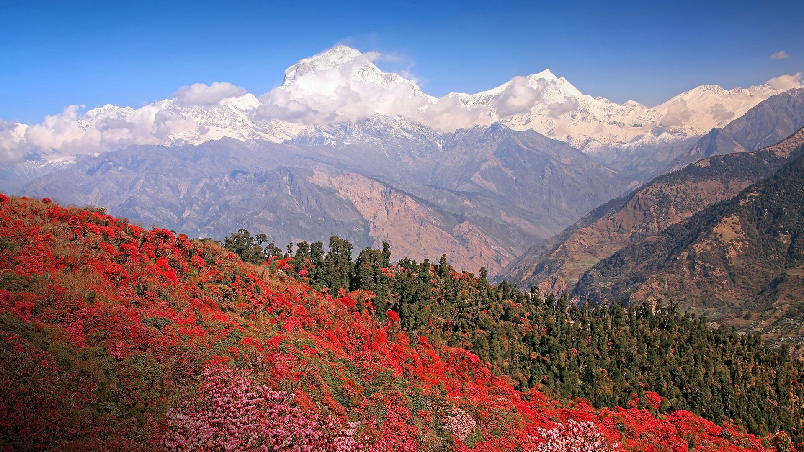
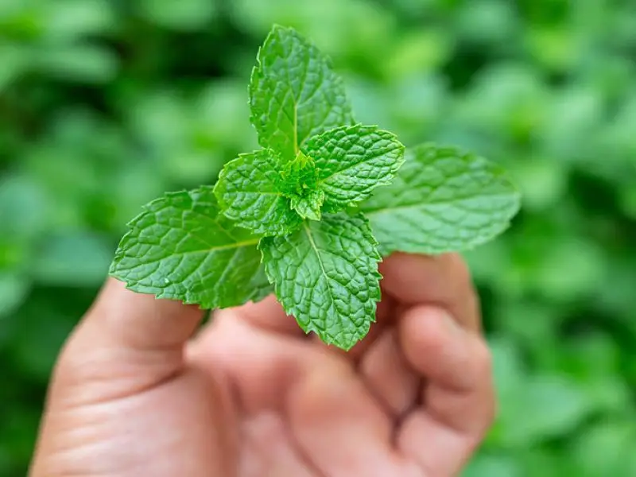
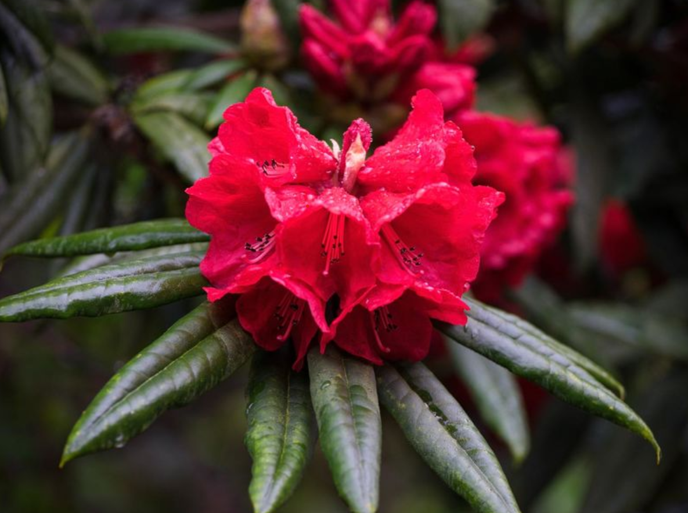
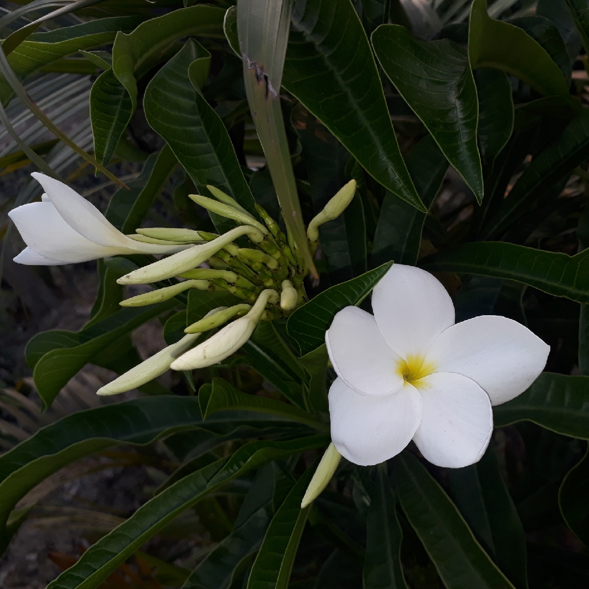

"Rare and Threatened Plants"
"Precious flora whispers, dancing on the edge of existence."
Endangered Plants
-
 💡Aloe's Quiet Cry: In sun's embrace, Aloe Vera, gentle healer, faces new trials. A plea in green, whispering for our care, as it clings to survival in a changing world.
💡Aloe's Quiet Cry: In sun's embrace, Aloe Vera, gentle healer, faces new trials. A plea in green, whispering for our care, as it clings to survival in a changing world. -  🛍️Mint's Fading Whisper: In cool, shaded corners, Mint breathes its fragrant tale. Now, amidst change, it seeks refuge, a delicate green plea echoing in the breeze.
-  🚚 Rhododendron's Silent Song: Nestled in misty hills, the Rhododendron blooms in quiet splendor. Yet, it sings a soft, urgent ballad, calling for care as its vibrant petals face uncertain tomorrows.
-  🤝 Michelia Alba's Whispering Bloom: Amidst dappled light, Michelia Alba unfurls its scented blossoms. A tender, fragrant plea resonates, seeking guardianship in a world where its beauty faces the shadows of risk.
What & WHY
In the heart of nature's grand tapestry, endangered plants are rare gems, teetering on the brink of forever's silence. They are whispers from the Earth, delicate and precious, holding secrets of beauty and balance. Our role, as stewards of this vibrant planet, is to nurture and shield these fragile lives. In safeguarding them, we weave a stronger, more colorful world, rich in diversity and harmony. Let us be the guardians of these living wonders, for in their survival lies the continuation of nature's magnificent song, a legacy of green splendor for the generations to come. Let's unite in this noble cause, for every plant saved is a verse added to the Earth's enduring poem.
Looking Forward
Looking ahead, there's real hope for endangered plants. Our actions today can bring them back from the brink, creating a vibrant, diverse world. Let's embrace this chance to make a difference, nurturing these precious species for a greener tomorrow. Together, we can turn their fate around, ensuring a thriving, biodiverse future.
Help Shape Our Future
Which of these plants do you want to learn more about?